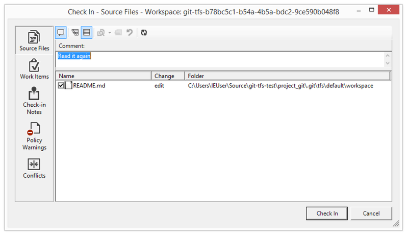

$ mkdir /tmp/test-svn
$ svnadmin create /tmp/test-svn作为客户端的 Git
Git 为开发者提供了如此优秀的体验，许多人已经找到了在他们的工作站上使用 Git 的方法，即使他们团队其余的人使用的是完全不同的 VCS。 有许多这种可用的适配器，它们被叫做 ``桥接''。 下面我们将要介绍几个很可能会在实际中用到的桥接。
Git 与 Subversion
很大一部分开源项目与相当多的企业项目使用 Subversion 来管理它们的源代码。 而且在大多数时间里，它已经是开源项目VCS选择的 事实标准。 它在很多方面都与曾经是源代码管理世界的大人物的 CVS 相似。
Git 中最棒的特性就是有一个与 Subversion 的双向桥接，它被称作 git svn。
这个工具允许你使用 Git 作为连接到 Subversion 有效的客户端，这样你可以使用 Git 所有本地的功能然后如同正在本地使用 Subversion 一样推送到 Subversion 服务器。
这意味着你可以在本地做新建分支与合并分支、使用暂存区、使用变基与拣选等等的事情，同时协作者还在继续使用他们黑暗又古老的方式。
当你试图游说公司将基础设施修改为完全支持 Git 的过程中，一个好方法是将 Git 偷偷带入到公司环境，并帮助周围的开发者提升效率。
Subversion 桥接就是进入 DVCS 世界的诱饵。
git svn
在 Git 中所有 Subversion 桥接命令的基础命令是 git svn。
它可以跟很多命令，所以我们会通过几个简单的工作流程来为你演示最常用的命令。
需要特别注意的是当你使用 git svn 时，就是在与 Subversion 打交道，一个与 Git 完全不同的系统。
尽管 可以 在本地新建分支与合并分支，但是你最好还是通过变基你的工作来保证你的历史尽可能是直线，并且避免做类似同时与 Git 远程服务器交互的事情。
不要重写你的历史然后尝试再次推送，同时也不要推送到一个平行的 Git 仓库来与其他使用 Git 的开发者协作。 Subversion 只能有一个线性的历史，弄乱它很容易。 如果你在一个团队中工作，其中有一些人使用 SVN 而另一些人使用 Git，你需要确保每个人都使用 SVN 服务器来协作 - 这样做会省去很多麻烦。
设置
为了演示这个功能，需要一个有写入权限的典型 SVN 仓库。
如果想要拷贝这些例子，你必须获得一份我的测试仓库的可写拷贝。
为了轻松地拷贝，可以使用 Subversion 自带的一个名为 svnsync 的工具。
为了这些测试，我们在 Google Code 上创建了一个 protobuf 项目部分拷贝的新 Subversion 仓库。protobuf 是一个将结构性数据编码用于网络传输的工具。
接下来，你需要先创建一个新的本地 Subversion 仓库：
然后，允许所有用户改变版本属性 - 最容易的方式是添加一个返回值为 0 的 pre-revprop-change 脚本。
$ cat /tmp/test-svn/hooks/pre-revprop-change
#!/bin/sh
exit 0;
$ chmod +x /tmp/test-svn/hooks/pre-revprop-change现在可以调用加入目标与来源仓库参数的 svnsync init 命令同步这个项目到本地的机器。
$ svnsync init file:///tmp/test-svn \
http://progit-example.googlecode.com/svn/这样就设置好了同步所使用的属性。 可以通过运行下面的命令来克隆代码：
$ svnsync sync file:///tmp/test-svn
Committed revision 1.
Copied properties for revision 1.
Transmitting file data .............................[...]
Committed revision 2.
Copied properties for revision 2.
[…]虽然这个操作可能只会花费几分钟，但如果你尝试拷贝原始的仓库到另一个非本地的远程仓库时，即使只有不到 100 个的提交，这个过程也可能会花费将近一个小时。 Subversion 必须一次复制一个版本然后推送回另一个仓库 - 这低效得可笑，但却是做这件事唯一简单的方式。
开始
既然已经有了一个有写入权限的 Subversion 仓库，那么你可以开始一个典型的工作流程。
可以从 git svn clone 命令开始，它会将整个 Subversion 仓库导入到一个本地 Git 仓库。
需要牢记的一点是如果是从一个真正托管的 Subversion 仓库中导入，需要将 file:///tmp/test-svn 替换为你的 Subversion 仓库的 URL：
$ git svn clone file:///tmp/test-svn -T trunk -b branches -t tags
Initialized empty Git repository in /private/tmp/progit/test-svn/.git/
r1 = dcbfb5891860124cc2e8cc616cded42624897125 (refs/remotes/origin/trunk)
A m4/acx_pthread.m4
A m4/stl_hash.m4
A java/src/test/java/com/google/protobuf/UnknownFieldSetTest.java
A java/src/test/java/com/google/protobuf/WireFormatTest.java
…
r75 = 556a3e1e7ad1fde0a32823fc7e4d046bcfd86dae (refs/remotes/origin/trunk)
Found possible branch point: file:///tmp/test-svn/trunk => file:///tmp/test-svn/branches/my-calc-branch, 75
Found branch parent: (refs/remotes/origin/my-calc-branch) 556a3e1e7ad1fde0a32823fc7e4d046bcfd86dae
Following parent with do_switch
Successfully followed parent
r76 = 0fb585761df569eaecd8146c71e58d70147460a2 (refs/remotes/origin/my-calc-branch)
Checked out HEAD:
file:///tmp/test-svn/trunk r75这相当于运行了两个命令 - git svn init 以及紧接着的 git svn fetch - 你提供的 URL 。
这会花费一些时间。
测试项目只有 75 个左右的提交并且代码库并不是很大，但是 Git 必须一次一个地检出一个版本同时单独地提交它。
对于有成百上千个提交的项目，这真的可能会花费几小时甚至几天来完成。
-T trunk -b branches -t tags 部分告诉 Git Subversion 仓库遵循基本的分支与标签惯例。
如果你命名了不同的主干、分支或标签，可以修改这些参数。
因为这是如此地常见，所以能用 -s 来替代整个这部分，这表示标准布局并且指代所有那些选项。
下面的命令是相同的：
$ git svn clone file:///tmp/test-svn -s至此，应该得到了一个已经导入了分支与标签的有效的 Git 仓库：
$ git branch -a
* master
remotes/origin/my-calc-branch
remotes/origin/tags/2.0.2
remotes/origin/tags/release-2.0.1
remotes/origin/tags/release-2.0.2
remotes/origin/tags/release-2.0.2rc1
remotes/origin/trunk注意这个工具是如何将 Subversion 标签作为远程引用来管理的。
让我们近距离看一下 Git 的底层命令 show-ref：
$ git show-ref
556a3e1e7ad1fde0a32823fc7e4d046bcfd86dae refs/heads/master
0fb585761df569eaecd8146c71e58d70147460a2 refs/remotes/origin/my-calc-branch
bfd2d79303166789fc73af4046651a4b35c12f0b refs/remotes/origin/tags/2.0.2
285c2b2e36e467dd4d91c8e3c0c0e1750b3fe8ca refs/remotes/origin/tags/release-2.0.1
cbda99cb45d9abcb9793db1d4f70ae562a969f1e refs/remotes/origin/tags/release-2.0.2
a9f074aa89e826d6f9d30808ce5ae3ffe711feda refs/remotes/origin/tags/release-2.0.2rc1
556a3e1e7ad1fde0a32823fc7e4d046bcfd86dae refs/remotes/origin/trunkGit 在从 Git 服务器克隆时并不这样做；下面是在刚刚克隆完成的有标签的仓库的样子：
$ git show-ref
c3dcbe8488c6240392e8a5d7553bbffcb0f94ef0 refs/remotes/origin/master
32ef1d1c7cc8c603ab78416262cc421b80a8c2df refs/remotes/origin/branch-1
75f703a3580a9b81ead89fe1138e6da858c5ba18 refs/remotes/origin/branch-2
23f8588dde934e8f33c263c6d8359b2ae095f863 refs/tags/v0.1.0
7064938bd5e7ef47bfd79a685a62c1e2649e2ce7 refs/tags/v0.2.0
6dcb09b5b57875f334f61aebed695e2e4193db5e refs/tags/v1.0.0Git 直接将标签抓取至 refs/tags，而不是将它们看作分支。
提交回 Subversion
现在你有了一个工作仓库，你可以在项目上做一些改动，然后高效地使用 Git 作为 SVN 客户端将你的提交推送到上游。 一旦编辑了一个文件并提交它，你就有了一个存在于本地 Git 仓库的提交，这提交在 Subversion 服务器上并不存在：
$ git commit -am 'Adding git-svn instructions to the README'
[master 4af61fd] Adding git-svn instructions to the README
1 file changed, 5 insertions(+)接下来，你需要将改动推送到上游。
注意这会怎样改变你使用 Subversion 的方式 - 你可以离线做几次提交然后一次性将它们推送到 Subversion 服务器。
要推送到一个 Subversion 服务器，运行 git svn dcommit 命令：
$ git svn dcommit
Committing to file:///tmp/test-svn/trunk ...
M README.txt
Committed r77
M README.txt
r77 = 95e0222ba6399739834380eb10afcd73e0670bc5 (refs/remotes/origin/trunk)
No changes between 4af61fd05045e07598c553167e0f31c84fd6ffe1 and refs/remotes/origin/trunk
Resetting to the latest refs/remotes/origin/trunk这会拿走你在 Subversion 服务器代码之上所做的所有提交，针对每一个做一个 Subversion 提交，然后重写你本地的 Git 提交来包含一个唯一的标识符。
这很重要因为这意味着所有你的提交的 SHA-1 校验和都改变了。
部分由于这个原因，同时使用一个基于 Git 的项目远程版本和一个 Subversion 服务器并不是一个好主意。
如果你查看最后一次提交，有新的 git-svn-id 被添加：
$ git log -1
commit 95e0222ba6399739834380eb10afcd73e0670bc5
Author: ben <ben@0b684db3-b064-4277-89d1-21af03df0a68>
Date: Thu Jul 24 03:08:36 2014 +0000
Adding git-svn instructions to the README
git-svn-id: file:///tmp/test-svn/trunk@77 0b684db3-b064-4277-89d1-21af03df0a68注意你原来提交的 SHA-1 校验和原来是以 4af61fd 开头，而现在是以 95e0222 开头。
如果想要既推送到一个 Git 服务器又推送到一个 Subversion 服务器，必须先推送（dcommit）到 Subversion 服务器，因为这个操作会改变你的提交数据。
拉取新改动
如果你和其他开发者一起工作，当在某一时刻你们其中之一推送时，另一人尝试推送修改会导致冲突。
那次修改会被拒绝直到你合并他们的工作。
在 git svn 中，它看起来是这样的：
$ git svn dcommit
Committing to file:///tmp/test-svn/trunk ...
ERROR from SVN:
Transaction is out of date: File '/trunk/README.txt' is out of date
W: d5837c4b461b7c0e018b49d12398769d2bfc240a and refs/remotes/origin/trunk differ, using rebase:
:100644 100644 f414c433af0fd6734428cf9d2a9fd8ba00ada145 c80b6127dd04f5fcda218730ddf3a2da4eb39138 M README.txt
Current branch master is up to date.
ERROR: Not all changes have been committed into SVN, however the committed
ones (if any) seem to be successfully integrated into the working tree.
Please see the above messages for details.为了解决这种情况，可以运行 git svn rebase，它会从服务器拉取任何你本地还没有的改动，并将你所有的工作变基到服务器的内容之上：
$ git svn rebase
Committing to file:///tmp/test-svn/trunk ...
ERROR from SVN:
Transaction is out of date: File '/trunk/README.txt' is out of date
W: eaa029d99f87c5c822c5c29039d19111ff32ef46 and refs/remotes/origin/trunk differ, using rebase:
:100644 100644 65536c6e30d263495c17d781962cfff12422693a b34372b25ccf4945fe5658fa381b075045e7702a M README.txt
First, rewinding head to replay your work on top of it...
Applying: update foo
Using index info to reconstruct a base tree...
M README.txt
Falling back to patching base and 3-way merge...
Auto-merging README.txt
ERROR: Not all changes have been committed into SVN, however the committed
ones (if any) seem to be successfully integrated into the working tree.
Please see the above messages for details.现在，所有你的工作都已经在 Subversion 服务器的内容之上了，你就可以顺利地 dcommit：
$ git svn dcommit
Committing to file:///tmp/test-svn/trunk ...
M README.txt
Committed r85
M README.txt
r85 = 9c29704cc0bbbed7bd58160cfb66cb9191835cd8 (refs/remotes/origin/trunk)
No changes between 5762f56732a958d6cfda681b661d2a239cc53ef5 and refs/remotes/origin/trunk
Resetting to the latest refs/remotes/origin/trunk注意，和 Git 需要你在推送前合并本地还没有的上游工作不同的是，git svn 只会在修改发生冲突时要求你那样做（更像是 Subversion 工作的行为）。
如果其他人推送一个文件的修改然后你推送了另一个文件的修改，你的 dcommit 命令会正常工作：
$ git svn dcommit
Committing to file:///tmp/test-svn/trunk ...
M configure.ac
Committed r87
M autogen.sh
r86 = d8450bab8a77228a644b7dc0e95977ffc61adff7 (refs/remotes/origin/trunk)
M configure.ac
r87 = f3653ea40cb4e26b6281cec102e35dcba1fe17c4 (refs/remotes/origin/trunk)
W: a0253d06732169107aa020390d9fefd2b1d92806 and refs/remotes/origin/trunk differ, using rebase:
:100755 100755 efa5a59965fbbb5b2b0a12890f1b351bb5493c18 e757b59a9439312d80d5d43bb65d4a7d0389ed6d M autogen.sh
First, rewinding head to replay your work on top of it...记住这一点很重要，因为结果是当你推送后项目的状态并不存在于你的电脑中。 如果修改并未冲突但却是不兼容的，可能会引起一些难以诊断的问题。 这与使用 Git 服务器并不同 - 在 Git 中，可以在发布前完全测试客户端系统的状态，然而在 SVN 中，你甚至不能立即确定在提交前与提交后的状态是相同的。
你也应该运行这个命令从 Subversion 服务器上拉取修改，即使你自己并不准备提交。
可以运行 git svn fetch 来抓取新数据，但是 git svn rebase 会抓取并更新你本地的提交。
$ git svn rebase
M autogen.sh
r88 = c9c5f83c64bd755368784b444bc7a0216cc1e17b (refs/remotes/origin/trunk)
First, rewinding head to replay your work on top of it...
Fast-forwarded master to refs/remotes/origin/trunk.每隔一会儿运行 git svn rebase 确保你的代码始终是最新的。
虽然需要保证当运行这个命令时工作目录是干净的。
如果有本地的修改，在运行 git svn rebase 之前要么储藏你的工作要么做一次临时的提交，不然，当变基会导致合并冲突时，命令会终止。
Git 分支问题
当适应了 Git 的工作流程，你大概会想要创建特性分支，在上面做一些工作，然后将它们合并入主分支。
如果你正通过 git svn 推送到一个 Subversion 服务器，你可能想要把你的工作变基到一个单独的分支上，而不是将分支合并到一起。
比较喜欢变基的原因是因为 Subversion 有一个线性的历史并且无法像 Git 一样处理合并，所以 git svn 在将快照转换成 Subversion 提交时，只会保留第一父提交。
假设你的历史像下面这样：创建了一个 experiment 分支，做了两次提交，然后将它们合并回 master。
当 dcommit 时，你看到输出是这样的：
$ git svn dcommit
Committing to file:///tmp/test-svn/trunk ...
M CHANGES.txt
Committed r89
M CHANGES.txt
r89 = 89d492c884ea7c834353563d5d913c6adf933981 (refs/remotes/origin/trunk)
M COPYING.txt
M INSTALL.txt
Committed r90
M INSTALL.txt
M COPYING.txt
r90 = cb522197870e61467473391799148f6721bcf9a0 (refs/remotes/origin/trunk)
No changes between 71af502c214ba13123992338569f4669877f55fd and refs/remotes/origin/trunk
Resetting to the latest refs/remotes/origin/trunk在一个合并过历史提交的分支上 dcommit 命令工作得很好，除了当你查看你的 Git 项目历史时，它并没有重写所有你在 experiment 分支上所做的任意提交 - 相反，所有这些修改显示一个单独合并提交的 SVN 版本中。
当其他人克隆那些工作时，他们只会看到一个被塞入了所有改动的合并提交，就像运行了 git merge --squash；他们无法看到修改从哪来或何时提交的信息。
Subversion 分支
在 Subversion 中新建分支与在 Git 中新建分支并不相同；如果你能不用它，那最好就不要用。 然而，你可以使用 git svn 在 Subversion 中创建分支并在分支上做提交。
创建一个新的 SVN 分支
要在 Subversion 中创建一个新分支，运行 git svn branch [branchname]：
$ git svn branch opera
Copying file:///tmp/test-svn/trunk at r90 to file:///tmp/test-svn/branches/opera...
Found possible branch point: file:///tmp/test-svn/trunk => file:///tmp/test-svn/branches/opera, 90
Found branch parent: (refs/remotes/origin/opera) cb522197870e61467473391799148f6721bcf9a0
Following parent with do_switch
Successfully followed parent
r91 = f1b64a3855d3c8dd84ee0ef10fa89d27f1584302 (refs/remotes/origin/opera)这与 Subversion 中的 svn copy trunk branches/opera 命令作用相同并且是在 Subversion 服务器中操作。
需要重点注意的是它并不会检出到那个分支；如果你在这时提交，提交会进入服务器的 trunk 分支，而不是 opera 分支。
切换活动分支
Git 通过查找在历史中 Subversion 分支的头部来指出你的提交将会到哪一个分支 - 应该只有一个，并且它应该是在当前分支历史中最后一个有 git-svn-id 的。
如果想要同时在不止一个分支上工作，可以通过在导入的那个分支的 Subversion 提交开始来设置本地分支 dcommit 到特定的 Subversion 分支。
如果想要一个可以单独在上面工作的 opera 分支，可以运行
$ git branch opera remotes/origin/opera现在，如果想要将你的 opera 分支合并入 trunk（你的 master 分支），可以用一个正常的 git merge 来这样做。
但是你需要通过 -m 来提供一个描述性的提交信息，否则合并信息会是没有用的 ``Merge branch opera''。
记住尽管使用的是 git merge 来做这个操作，而且合并可能会比在 Subversion 中更容易一些（因为 Git 会为你自动地检测合适的合并基础），但这并不是一个普通的 Git 合并提交。
你不得不将这个数据推送回一个 Subversion 服务器，Subversion 服务器不支持那些跟踪多个父结点的提交；所以，当推送完成后，它看起来会是一个将其他分支的所有提交压缩在一起的单独提交。
在合并一个分支到另一个分支后，你并不能像 Git 中那样轻松地回到原来的分支继续工作。
你运行的 dcommit 命令会将哪个分支被合并进来的信息抹掉，所以后续的合并基础计算会是错的 - dcommit 会使你的 git merge 结果看起来像是运行了 git merge --squash。
不幸的是，没有一个好的方式来避免这种情形 - Subversion 无法存储这个信息，所以当使用它做为服务器时你总是会被它的限制打垮。
为了避免这些问题，应该在合并到主干后删除本地分支（本例中是 opera）。
Subversion 命令
git svn 工具集通过提供很多功能与 Subversion 中那些相似的命令来帮助简化转移到 Git 的过程。
下面是一些提供了 Subversion 中常用功能的命令。
SVN 风格历史
如果你习惯于使用 Subversion 并且想要看 SVN 输出风格的提交历史，可以运行 git svn log 来查看 SVN 格式的提交历史：
$ git svn log
------------------------------------------------------------------------
r87 | schacon | 2014-05-02 16:07:37 -0700 (Sat, 02 May 2014) | 2 lines
autogen change
------------------------------------------------------------------------
r86 | schacon | 2014-05-02 16:00:21 -0700 (Sat, 02 May 2014) | 2 lines
Merge branch 'experiment'
------------------------------------------------------------------------
r85 | schacon | 2014-05-02 16:00:09 -0700 (Sat, 02 May 2014) | 2 lines
updated the changelog关于 git svn log，有两件重要的事你应该知道。
首先，它是离线工作的，并不像真正的 svn log 命令，会向 Subversion 服务器询问数据。
其次，它只会显示已经提交到 Subversion 服务器上的提交。
还未 dcommit 的本地 Git 提交并不会显示；同样也不会显示这段时间中其他人推送到 Subversion 服务器上的提交。
它更像是最后获取到的 Subversion 服务器上的提交状态。
SVN 注解
类似 git svn log 命令离线模拟了 svn log 命令，你可以认为 git svn blame [FILE] 离线模拟了 svn annotate。
输出看起来像这样：
$ git svn blame README.txt
2 temporal Protocol Buffers - Google's data interchange format
2 temporal Copyright 2008 Google Inc.
2 temporal http://code.google.com/apis/protocolbuffers/
2 temporal
22 temporal C++ Installation - Unix
22 temporal =======================
2 temporal
79 schacon Committing in git-svn.
78 schacon
2 temporal To build and install the C++ Protocol Buffer runtime and the Protocol
2 temporal Buffer compiler (protoc) execute the following:
2 temporal重复一次，它并不显示你在 Git 中的本地提交，也不显示同一时间被推送到 Subversion 的其他提交。
SVN 服务器信息
可以通过运行 git svn info 得到与 svn info 相同种类的信息。
$ git svn info
Path: .
URL: https://schacon-test.googlecode.com/svn/trunk
Repository Root: https://schacon-test.googlecode.com/svn
Repository UUID: 4c93b258-373f-11de-be05-5f7a86268029
Revision: 87
Node Kind: directory
Schedule: normal
Last Changed Author: schacon
Last Changed Rev: 87
Last Changed Date: 2009-05-02 16:07:37 -0700 (Sat, 02 May 2009)这就像是在你上一次和 Subversion 服务器通讯时同步了之后，离线运行的 blame 与 log 命令。
忽略 Subversion 所忽略的
如果克隆一个在任意一处设置 svn:ignore 属性的 Subversion 仓库时，你也许会想要设置对应的 .gitignore 文件，这样就不会意外的提交那些不该提交的文件。
git svn 有两个命令来帮助解决这个问题。
第一个是 git svn create-ignore，它会为你自动地创建对应的 .gitignore 文件，这样你的下次提交就能包含它们。
第二个命令是 git svn show-ignore，它会将你需要放在 .gitignore 文件中的每行内容打印到标准输出，这样就可以将输出内容重定向到项目的例外文件中：
$ git svn show-ignore > .git/info/exclude这样，你就不会由于 .gitignore 文件而把项目弄乱。
当你是 Subversion 团队中唯一的 Git 用户时这是一个好的选项，并且你的队友并不想要项目内存在 .gitignore 文件。
Git-Svn 总结
当你不得不使用 Subversion 服务器或者其他必须运行一个 Subversion 服务器的开发环境时，git svn 工具很有用。
你应该把它当做一个不完全的 Git，然而，你要是不用它的话，就会在做转换的过程中遇到很多麻烦的问题。
为了不惹麻烦，尽量遵守这些准则：
-
保持一个线性的 Git 历史，其中不能有
git merge生成的合并提交。 把你在主线分支外开发的全部工作变基到主线分支；而不要合并入主线分支。 -
不要建立一个单独的 Git 服务器，也不要在 Git 服务器上协作。 可以用一台 Git 服务器来帮助新来的开发者加速克隆，但是不要推送任何不包含
git-svn-id条目的东西。 你可能会需要增加一个pre-receive钩子来检查每一个提交信息是否包含git-svn-id并且拒绝任何未包含的提交。
如果你遵守了那些准则，忍受用一个 Subversion 服务器来工作可以更容易些。 然而，如果有可能迁移到一个真正的 Git 服务器，那么迁移过去能使你的团队获得更多好处。
Git 与 Mercurial
DVCS 的宇宙里不只有 Git。 实际上，在这个空间里有许多其他的系统。对于如何正确地进行分布式版本管理，每一个系统都有自己的视角。 除了 Git，最流行的就是 Mercurial，并且它们两个在很多方面都很相似。
好消息是，如果你更喜欢 Git 的客户端行为但是工作在源代码由 Mercurial 控制的项目中，有一种使用 Git 作为 Mercurial 托管仓库的客户端的方法。 由于 Git 与服务器仓库是使用远程交互的，那么由远程助手实现的桥接方法就不会让人很惊讶。 这个项目的名字是 git-remote-hg，可以在 https://github.com/felipec/git-remote-hg 找到。
git-remote-hg
首先，需要安装 git-remote-hg。 实际上需要将它的文件放在 PATH 变量的某个目录中，像这样：
$ curl -o ~/bin/git-remote-hg \
https://raw.githubusercontent.com/felipec/git-remote-hg/master/git-remote-hg
$ chmod +x ~/bin/git-remote-hg假定 ~/bin 在 $PATH 变量中。
Git-remote-hg 有一个其他的依赖：mercurial Python 库。
如果已经安装了 Python，安装它就像这样简单：
$ pip install mercurial（如果未安装 Python，访问 https://www.python.org/ 来获取它。）
需要做的最后一件事是安装 Mercurial 客户端。 如果还没有安装的话请访问 http://mercurial.selenic.com/ 来安装。
现在已经准备好摇滚了。 你所需要的一切就是一个你可以推送的 Mercurial 仓库。 很幸运，每一个 Mercurial 仓库都可以这样做，所以我们只需要使用大家用来学习 Mercurial 的“hello world”仓库就可以了：
$ hg clone http://selenic.com/repo/hello /tmp/hello开始
既然有一个可用的 ``server-side'' 仓库，我们可以通过一个典型的工作流来了解。 你将会看到，这两种系统非常相似，没有太多的出入。
和 Git 一样，首先我们克隆：
$ git clone hg::/tmp/hello /tmp/hello-git
$ cd /tmp/hello-git
$ git log --oneline --graph --decorate
* ac7955c (HEAD, origin/master, origin/branches/default, origin/HEAD, refs/hg/origin/branches/default, refs/hg/origin/bookmarks/master, master) Create a makefile
* 65bb417 Create a standard "hello, world" program你会注意到与 Mercurial 仓库工作时使用了标准的 git clone 命令。
那是因为 git-remote-hg 工作在相当低的底层，使用类似于 Git HTTP/S 协议的机制实现的（远程助手）。
由于 Git 与 Mercurial 都设计为每一个客户端有一个仓库的完整历史，所以这个命令做了一次完整的克隆，包括所有的项目历史，并且相当快地完成。
log 命令显示了两次提交，最后一次提交指向了一大堆引用。
那说明这其中的一部分实际上并没有在那儿。
让我们看看 .git 目录中实际上有什么：
$ tree .git/refs
.git/refs
├── heads
│ └── master
├── hg
│ └── origin
│ ├── bookmarks
│ │ └── master
│ └── branches
│ └── default
├── notes
│ └── hg
├── remotes
│ └── origin
│ └── HEAD
└── tags
9 directories, 5 filesGit-remote-hg 尝试让结构更有 Git 风格，但是在隐藏在下面的是它管理两个轻微不同系统之间概念的映射。
refs/hg 目录中存储了实际的远程引用。
例如，refs/hg/origin/branches/default 是一个包含以`ac7955c''开始的 SHA-1 值的 Git 引用文件，是 `master 所指向的提交。
所以 refs/hg 目录是一种类似 refs/remotes/origin 的替代品，但是它引入了书签与分支的区别。
notes/hg 文件是 git-remote-hg 如何在 Git 的提交散列与 Mercurial 变更集 ID 之间建立映射的起点。
让我们来探索一下：
$ cat notes/hg
d4c10386...
$ git cat-file -p d4c10386...
tree 1781c96...
author remote-hg <> 1408066400 -0800
committer remote-hg <> 1408066400 -0800
Notes for master
$ git ls-tree 1781c96...
100644 blob ac9117f... 65bb417...
100644 blob 485e178... ac7955c...
$ git cat-file -p ac9117f
0a04b987be5ae354b710cefeba0e2d9de7ad41a9所以 refs/notes/hg 指向了一个树，即在 Git 对象数据库中的一个有其他对象名字的列表。
git ls-tree 输出 tree 对象中所有项目的模式、类型、对象哈希与文件名。
如果深入挖掘 tree 对象中的一个项目，我们会发现在其中是一个名字为 ac9117f'' 的 blob 对象（master 所指向提交的 SHA-1 散列值），包含内容 0a04b98''（是 default 分支指向的 Mercurial 变更集的 ID）。
好消息是大多数情况下我们不需要关心以上这些。 典型的工作流程与使用 Git 远程仓库并没有什么不同。
在我们继续之前，这里还有一件需要注意的事情：忽略。
Mercurial 与 Git 使用非常类似的机制实现这个功能，但是一般来说你不会想要把一个 .gitignore 文件提交到 Mercurial 仓库中。
幸运的是，Git 有一种方式可以忽略本地磁盘仓库的文件，而且 Mercurial 格式是与 Git 兼容的，所以你只需将这个文件拷贝过去：
$ cp .hgignore .git/info/exclude.git/info/exclude 文件的作用像是一个 .gitignore，但是它不包含在提交中。
工作流程
假设我们已经做了一些工作并且在 master 分支做了几次提交，而且已经准备将它们推送到远程仓库。
这是我们仓库现在的样子：
$ git log --oneline --graph --decorate
* ba04a2a (HEAD, master) Update makefile
* d25d16f Goodbye
* ac7955c (origin/master, origin/branches/default, origin/HEAD, refs/hg/origin/branches/default, refs/hg/origin/bookmarks/master) Create a makefile
* 65bb417 Create a standard "hello, world" program我们的 master 分支领先 origin/master 分支两个提交，但是那两个提交只存在于我们的本地机器中。
让我们看看在同一时间有没有其他人做过什么重要的工作：
$ git fetch
From hg::/tmp/hello
ac7955c..df85e87 master -> origin/master
ac7955c..df85e87 branches/default -> origin/branches/default
$ git log --oneline --graph --decorate --all
* 7b07969 (refs/notes/hg) Notes for default
* d4c1038 Notes for master
* df85e87 (origin/master, origin/branches/default, origin/HEAD, refs/hg/origin/branches/default, refs/hg/origin/bookmarks/master) Add some documentation
| * ba04a2a (HEAD, master) Update makefile
| * d25d16f Goodbye
|/
* ac7955c Create a makefile
* 65bb417 Create a standard "hello, world" program因为使用了 --all 标记，我们看到被 git-remote-hg 内部使用的 `notes'' 引用，但是可以忽略它们。
剩下的部分是我们期望的；`origin/master 已经前进了一次提交，同时我们的历史现在分叉了。
Mercurial 和我们本章中讨论的其他系统不一样，它能够处理合并，所以我们不需要做任何其他事情。
$ git merge origin/master
Auto-merging hello.c
Merge made by the 'recursive' strategy.
hello.c | 2 +-
1 file changed, 1 insertion(+), 1 deletion(-)
$ git log --oneline --graph --decorate
* 0c64627 (HEAD, master) Merge remote-tracking branch 'origin/master'
|\
| * df85e87 (origin/master, origin/branches/default, origin/HEAD, refs/hg/origin/branches/default, refs/hg/origin/bookmarks/master) Add some documentation
* | ba04a2a Update makefile
* | d25d16f Goodbye
|/
* ac7955c Create a makefile
* 65bb417 Create a standard "hello, world" program完美。 运行测试然后所有测试都通过了，所以我们准备将工作共享给团队的其他成员。
$ git push
To hg::/tmp/hello
df85e87..0c64627 master -> master就是这样！ 如果你现在查看一下 Mercurial 仓库，你会发现这样实现了我们所期望的：
$ hg log -G --style compact
o 5[tip]:4,2 dc8fa4f932b8 2014-08-14 19:33 -0700 ben
|\ Merge remote-tracking branch 'origin/master'
| |
| o 4 64f27bcefc35 2014-08-14 19:27 -0700 ben
| | Update makefile
| |
| o 3:1 4256fc29598f 2014-08-14 19:27 -0700 ben
| | Goodbye
| |
@ | 2 7db0b4848b3c 2014-08-14 19:30 -0700 ben
|/ Add some documentation
|
o 1 82e55d328c8c 2005-08-26 01:21 -0700 mpm
| Create a makefile
|
o 0 0a04b987be5a 2005-08-26 01:20 -0700 mpm
Create a standard "hello, world" program序号 2 的变更集是由 Mercurial 生成的，序号 3 与序号 4 的变更集是由 git-remote-hg 生成的，通过 Git 推送上来的提交。
分支与书签
Git 只有一种类型的分支：当提交生成时移动的一个引用。 在 Mercurial 中，这种类型的引用叫作 ``bookmark''，它的行为非常类似于 Git 分支。
Mercurial 的 `branch'' 概念则更重量级一些。
变更集生成时的分支会记录 在变更集中，意味着它会永远地存在于仓库历史中。
这个例子描述了一个在 `develop 分支上的提交：
$ hg log -l 1
changeset: 6:8f65e5e02793
branch: develop
tag: tip
user: Ben Straub <ben@straub.cc>
date: Thu Aug 14 20:06:38 2014 -0700
summary: More documentation注意开头为 ``branch'' 的那行。 Git 无法真正地模拟这种行为（并且也不需要这样做；两种类型的分支都可以表达为 Git 的一个引用），但是 git-remote-hg 需要了解其中的区别，因为 Mercurial 关心。
创建 Mercurial 书签与创建 Git 分支一样容易。 在 Git 这边：
$ git checkout -b featureA
Switched to a new branch 'featureA'
$ git push origin featureA
To hg::/tmp/hello
* [new branch] featureA -> featureA这就是所要做的全部。 在 Mercurial 这边，它看起来像这样：
$ hg bookmarks
featureA 5:bd5ac26f11f9
$ hg log --style compact -G
@ 6[tip] 8f65e5e02793 2014-08-14 20:06 -0700 ben
| More documentation
|
o 5[featureA]:4,2 bd5ac26f11f9 2014-08-14 20:02 -0700 ben
|\ Merge remote-tracking branch 'origin/master'
| |
| o 4 0434aaa6b91f 2014-08-14 20:01 -0700 ben
| | update makefile
| |
| o 3:1 318914536c86 2014-08-14 20:00 -0700 ben
| | goodbye
| |
o | 2 f098c7f45c4f 2014-08-14 20:01 -0700 ben
|/ Add some documentation
|
o 1 82e55d328c8c 2005-08-26 01:21 -0700 mpm
| Create a makefile
|
o 0 0a04b987be5a 2005-08-26 01:20 -0700 mpm
Create a standard "hello, world" program注意在修订版本 5 上的新 [featureA] 标签。
在 Git 这边这些看起来像是 Git 分支，除了一点：不能从 Git 这边删除书签（这是远程助手的一个限制）。
你也可以工作在一个 `重量级'' 的 Mercurial branch：只需要在 `branches 命名空间内创建一个分支：
$ git checkout -b branches/permanent
Switched to a new branch 'branches/permanent'
$ vi Makefile
$ git commit -am 'A permanent change'
$ git push origin branches/permanent
To hg::/tmp/hello
* [new branch] branches/permanent -> branches/permanent下面是 Mercurial 这边的样子：
$ hg branches
permanent 7:a4529d07aad4
develop 6:8f65e5e02793
default 5:bd5ac26f11f9 (inactive)
$ hg log -G
o changeset: 7:a4529d07aad4
| branch: permanent
| tag: tip
| parent: 5:bd5ac26f11f9
| user: Ben Straub <ben@straub.cc>
| date: Thu Aug 14 20:21:09 2014 -0700
| summary: A permanent change
|
| @ changeset: 6:8f65e5e02793
|/ branch: develop
| user: Ben Straub <ben@straub.cc>
| date: Thu Aug 14 20:06:38 2014 -0700
| summary: More documentation
|
o changeset: 5:bd5ac26f11f9
|\ bookmark: featureA
| | parent: 4:0434aaa6b91f
| | parent: 2:f098c7f45c4f
| | user: Ben Straub <ben@straub.cc>
| | date: Thu Aug 14 20:02:21 2014 -0700
| | summary: Merge remote-tracking branch 'origin/master'
[...]分支名字 ``permanent'' 记录在序号 7 的变更集中。
在 Git 这边，对于其中任何一种风格的分支的工作都是相同的：仅仅是正常做的检出、提交、抓取、合并、拉取与推送。 还有需要知道的一件事情是 Mercurial 不支持重写历史，只允许添加历史。 下面是我们的 Mercurial 仓库在交互式的变基与强制推送后的样子：
$ hg log --style compact -G
o 10[tip] 99611176cbc9 2014-08-14 20:21 -0700 ben
| A permanent change
|
o 9 f23e12f939c3 2014-08-14 20:01 -0700 ben
| Add some documentation
|
o 8:1 c16971d33922 2014-08-14 20:00 -0700 ben
| goodbye
|
| o 7:5 a4529d07aad4 2014-08-14 20:21 -0700 ben
| | A permanent change
| |
| | @ 6 8f65e5e02793 2014-08-14 20:06 -0700 ben
| |/ More documentation
| |
| o 5[featureA]:4,2 bd5ac26f11f9 2014-08-14 20:02 -0700 ben
| |\ Merge remote-tracking branch 'origin/master'
| | |
| | o 4 0434aaa6b91f 2014-08-14 20:01 -0700 ben
| | | update makefile
| | |
+---o 3:1 318914536c86 2014-08-14 20:00 -0700 ben
| | goodbye
| |
| o 2 f098c7f45c4f 2014-08-14 20:01 -0700 ben
|/ Add some documentation
|
o 1 82e55d328c8c 2005-08-26 01:21 -0700 mpm
| Create a makefile
|
o 0 0a04b987be5a 2005-08-26 01:20 -0700 mpm
Create a standard "hello, world" program变更集 8、9 与 10 已经被创建出来并且属于 permanent 分支，但是旧的变更集依然在那里。
这会让使用 Mercurial 的团队成员非常困惑，所以要避免这种行为。
Mercurial 总结
Git 与 Mercurial 如此相似，以至于跨这两个系统进行工作十分流畅。 如果能注意避免改变在你机器上的历史（就像通常建议的那样），你甚至并不会察觉到另一端是 Mercurial。
Git 与 Perforce
在企业环境中 Perforce 是非常流行的版本管理系统。 它大概起始于 1995 年，这使它成为了本章中介绍的最古老的系统。 就其本身而言，它设计时带有当时时代的局限性；它假定你始终连接到一个单独的中央服务器，本地磁盘只保存一个版本。 诚然，它的功能与限制适合几个特定的问题，但实际上，在很多情况下，将使用 Perforce 的项目换做使用 Git 会更好。
如果你决定混合使用 Perforce 与 Git 这里有两种选择。 第一个我们要介绍的是 Perforce 官方制作的 ``Git Fusion'' 桥接，它可以将 Perforce 仓库中的子树表示为一个可读写的 Git 仓库。 第二个是 git-p4，一个客户端桥接允许你将 Git 作为 Perforce 的客户端使用，而不用在 Perforce 服务器上做任何重新的配置。
Git Fusion
Perforce 提供了一个叫作 Git Fusion 的产品（可在 http://www.perforce.com/git-fusion 获得），它将会在服务器这边同步 Perforce 服务器与 Git 仓库。
设置
针对我们的例子，我们将会使用最简单的方式安装 Git Fusion：下载一个虚拟机来运行 Perforce 守护进程与 Git Fusion。 可以从 http://www.perforce.com/downloads/Perforce/20-User 获得虚拟机镜像，下载完成后将它导入到你最爱的虚拟机软件中（我们将会使用 VirtualBox）。
在第一次启动机器后，它会询问你自定义三个 Linux 用户（root、perforce 与 git）的密码，并且提供一个实例名字来区分在同一网络下不同的安装。
当那些都完成后，将会看到这样：

Figure 1. Git Fusion 虚拟机启动屏幕。
应当注意显示在这儿的 IP 地址，我们将会在后面用到。
接下来，我们将会创建一个 Perforce 用户。
选择底部的 `Login'' 选项并按下回车（或者用 SSH 连接到这台机器），然后登录为 `root。
然后使用这些命令创建一个用户：
$ p4 -p localhost:1666 -u super user -f john
$ p4 -p localhost:1666 -u john passwd
$ exit第一个命令将会打开一个 VI 编辑器来自定义用户，但是可以通过输入 :wq 并回车来接受默认选项。
第二个命令将会提示输入密码两次。
这就是所有我们要通过终端提示符做的事情，所以现在可以退出当前会话了。
接下来要做的事就是告诉 Git 不要验证 SSL 证书。 Git Fusion 镜像内置一个证书，但是域名并不匹配你的虚拟主机的 IP 地址，所以 Git 会拒绝 HTTPS 连接。 如果要进行永久安装，查阅 Perforce Git Fusion 手册来安装一个不同的证书；然而，对于我们这个例子来说，这已经足够了。
$ export GIT_SSL_NO_VERIFY=true现在我们可以测试所有东西是不是正常工作。
$ git clone https://10.0.1.254/Talkhouse
Cloning into 'Talkhouse'...
Username for 'https://10.0.1.254': john
Password for 'https://john@10.0.1.254':
remote: Counting objects: 630, done.
remote: Compressing objects: 100% (581/581), done.
remote: Total 630 (delta 172), reused 0 (delta 0)
Receiving objects: 100% (630/630), 1.22 MiB | 0 bytes/s, done.
Resolving deltas: 100% (172/172), done.
Checking connectivity... done.虚拟机镜像自带一个可以克隆的样例项目。
这里我们会使用之前创建的 john 用户，通过 HTTPS 进行克隆；Git 询问此次连接的凭证，但是凭证缓存会允许我们跳过这步之后的任意后续请求。
Fusion 配置
一旦安装了 Git Fusion，你会想要调整配置。
使用你最爱的 Perforce 客户端做这件事实际上相当容易；只需要映射 Perforce 服务器上的 //.git-fusion 目录到你的工作空间。
文件结构看起来像这样：
$ tree
.
├── objects
│ ├── repos
│ │ └── [...]
│ └── trees
│ └── [...]
│
├── p4gf_config
├── repos
│ └── Talkhouse
│ └── p4gf_config
└── users
└── p4gf_usermap
498 directories, 287 filesobjects 目录被 Git Fusion 内部用来双向映射 Perforce 对象与 Git 对象，你不必弄乱那儿的任何东西。
在这个目录中有一个全局的 p4gf_config 文件，每个仓库中也会有一份 - 这些配置文件决定了 Git Fusion 的行为。
让我们看一下根目录下的文件：
[repo-creation]
charset = utf8
[git-to-perforce]
change-owner = author
enable-git-branch-creation = yes
enable-swarm-reviews = yes
enable-git-merge-commits = yes
enable-git-submodules = yes
preflight-commit = none
ignore-author-permissions = no
read-permission-check = none
git-merge-avoidance-after-change-num = 12107
[perforce-to-git]
http-url = none
ssh-url = none
[@features]
imports = False
chunked-push = False
matrix2 = False
parallel-push = False
[authentication]
email-case-sensitivity = no这里我们并不会深入介绍这些选项的含义，但是要注意这是一个 INI 格式的文本文件，就像 Git 的配置。
这个文件指定了全局选项，但它可以被仓库特定的配置文件覆盖，像是 repos/Talkhouse/p4gf_config。
如果打开这个文件，你会看到有一些与全局默认不同设置的 [@repo] 区块。
你也会看到像下面这样的区块：
[Talkhouse-master]
git-branch-name = master
view = //depot/Talkhouse/main-dev/... ...这是一个 Perforce 分支与一个 Git 分支的映射。
这个区块可以被命名成你喜欢的名字，只要保证名字是唯一的即可。
git-branch-name 允许你将在 Git 下显得笨重的仓库路径转换为更友好的名字。
view 选项使用标准视图映射语法控制 Perforce 文件如何映射到 Git 仓库。
可以指定一个以上的映射，就像下面的例子：
[multi-project-mapping]
git-branch-name = master
view = //depot/project1/main/... project1/...
//depot/project2/mainline/... project2/...通过这种方式，如果正常工作空间映射包含对目录结构的修改，可以将其复制为一个 Git 仓库。
最后一个我们讨论的文件是 users/p4gf_usermap，它将 Perforce 用户映射到 Git 用户，但你可能不会需要它。
当从一个 Perforce 变更集转换为一个 Git 提交时，Git Fusion 的默认行为是去查找 Perforce 用户，然后把邮箱地址与全名存储在 Git 的 author/commiter 字段中。
当反过来转换时，默认的行为是根据存储在 Git 提交中 author 字段中的邮箱地址来查找 Perforce 用户，然后以该用户提交变更集（以及权限的应用）。
大多数情况下，这个行为工作得很好，但是考虑下面的映射文件：
john john@example.com "John Doe"
john johnny@appleseed.net "John Doe"
bob employeeX@example.com "Anon X. Mouse"
joe employeeY@example.com "Anon Y. Mouse"每一行的格式都是 <user> <email> "<full name>"，创建了一个单独的用户映射。
前两行映射不同的邮箱地址到同一个 Perforce 用户账户。
当使用几个不同的邮箱地址（或改变邮箱地址）生成 Git 提交并且想要让他们映射到同一个 Perforce 用户时这会很有用。
当从一个 Perforce 变更集创建一个 Git 提交时，第一个匹配 Perforce 用户的行会被用作 Git 作者信息。
最后两行从创建的 Git 提交中掩盖了 Bob 与 Joe 的真实名字与邮箱地址。 当你想要将一个内部项目开源，但不想将你的雇员目录公布到全世界时这很不错。 注意邮箱地址与全名需要是唯一的，除非想要所有的 Git 提交都属于一个虚构的作者。
工作流程
Perforce Git Fusion 是在 Perforce 与 Git 版本控制间双向的桥接。 让我们看一下在 Git 这边工作是什么样的感觉。 假定我们在 ``Jam'' 项目中使用上述的配置文件映射了，可以这样克隆：
$ git clone https://10.0.1.254/Jam
Cloning into 'Jam'...
Username for 'https://10.0.1.254': john
Password for 'https://ben@10.0.1.254':
remote: Counting objects: 2070, done.
remote: Compressing objects: 100% (1704/1704), done.
Receiving objects: 100% (2070/2070), 1.21 MiB | 0 bytes/s, done.
remote: Total 2070 (delta 1242), reused 0 (delta 0)
Resolving deltas: 100% (1242/1242), done.
Checking connectivity... done.
$ git branch -a
* master
remotes/origin/HEAD -> origin/master
remotes/origin/master
remotes/origin/rel2.1
$ git log --oneline --decorate --graph --all
* 0a38c33 (origin/rel2.1) Create Jam 2.1 release branch.
| * d254865 (HEAD, origin/master, origin/HEAD, master) Upgrade to latest metrowerks on Beos -- the Intel one.
| * bd2f54a Put in fix for jam's NT handle leak.
| * c0f29e7 Fix URL in a jam doc
| * cc644ac Radstone's lynx port.
[...]当首次这样做时，会花费一些时间。 这里发生的是 Git Fusion 会将在 Perforce 历史中所有合适的变更集转换为 Git 提交。 这发生在服务器端本地，所以会相当快，但是如果有很多历史，那么它还是会花费一些时间。 后来的抓取会做增量转换，所以会感觉更像 Git 的本地速度。
如你所见，我们的仓库看起来像之前使用过的任何一个 Git 仓库了。
这里有三个分支，Git 已经帮助创建了一个跟踪 origin/master 的本地 master 分支。
让我们做一些工作，创建几个新提交：
# ...
$ git log --oneline --decorate --graph --all
* cfd46ab (HEAD, master) Add documentation for new feature
* a730d77 Whitespace
* d254865 (origin/master, origin/HEAD) Upgrade to latest metrowerks on Beos -- the Intel one.
* bd2f54a Put in fix for jam's NT handle leak.
[...]我们有两个新提交。 现在我们检查下是否有其他人在工作：
$ git fetch
remote: Counting objects: 5, done.
remote: Compressing objects: 100% (3/3), done.
remote: Total 3 (delta 2), reused 0 (delta 0)
Unpacking objects: 100% (3/3), done.
From https://10.0.1.254/Jam
d254865..6afeb15 master -> origin/master
$ git log --oneline --decorate --graph --all
* 6afeb15 (origin/master, origin/HEAD) Update copyright
| * cfd46ab (HEAD, master) Add documentation for new feature
| * a730d77 Whitespace
|/
* d254865 Upgrade to latest metrowerks on Beos -- the Intel one.
* bd2f54a Put in fix for jam's NT handle leak.
[...]看起来有人在工作！
从这个视图来看你并不知道这点，但是 6afeb15 提交确实是使用 Perforce 客户端创建的。
从 Git 的视角看它仅仅只是另一个提交，准确地说是一个点。
让我们看看 Perforce 服务器如何处理一个合并提交：
$ git merge origin/master
Auto-merging README
Merge made by the 'recursive' strategy.
README | 2 +-
1 file changed, 1 insertion(+), 1 deletion(-)
$ git push
Counting objects: 9, done.
Delta compression using up to 8 threads.
Compressing objects: 100% (9/9), done.
Writing objects: 100% (9/9), 917 bytes | 0 bytes/s, done.
Total 9 (delta 6), reused 0 (delta 0)
remote: Perforce: 100% (3/3) Loading commit tree into memory...
remote: Perforce: 100% (5/5) Finding child commits...
remote: Perforce: Running git fast-export...
remote: Perforce: 100% (3/3) Checking commits...
remote: Processing will continue even if connection is closed.
remote: Perforce: 100% (3/3) Copying changelists...
remote: Perforce: Submitting new Git commit objects to Perforce: 4
To https://10.0.1.254/Jam
6afeb15..89cba2b master -> masterGit 认为它成功了。
让我们从 Perforce 的视角看一下 README 文件的历史，使用 p4v 的版本图功能。

Figure 2. Git 推送后的 Perforce 版本图
如果你在之前从未看过这个视图，它似乎让人困惑，但是它显示出了作为 Git 历史图形化查看器相同的概念。
我们正在查看 README 文件的历史，所以左上角的目录树只显示那个文件在不同分支的样子。
右上方，我们有不同版本文件关系的可视图，这个可视图的全局视图在右下方。
视图中剩余的部分显示出选择版本的详细信息（在这个例子中是 2）
还要注意的一件事是这个图看起来很像 Git 历史中的图。
Perforce 没有存储 1 和 2 提交的命名分支，所以它在 .git-fusion 目录中生成了一个 ``anonymous'' 分支来保存它。
这也会在 Git 命名分支不对应 Perforce 命名分支时发生（稍后你可以使用配置文件来映射它们到 Perforce 分支）。
这些大多数发生在后台，但是最终结果是团队中的一个人可以使用 Git，另一个可以使用 Perforce，而所有人都不知道其他人的选择。
Git-Fusion 总结
如果你有（或者能获得）接触你的 Perforce 服务器的权限，那么 Git Fusion 是使 Git 与 Perforce 互相交流的很好的方法。 这里包含了一点配置，但是学习曲线并不是很陡峭。 这是本章中其中一个不会出现无法使用 Git 全部能力的警告的章节。 这并不是说扔给 Perforce 任何东西都会高兴 - 如果你尝试重写已经推送的历史，Git Fusion 会拒绝它 - 虽然 Git Fusion 尽力让你感觉是原生的。 你甚至可以使用 Git 子模块（尽管它们对 Perforce 用户看起来很奇怪），合并分支（在 Perforce 这边会被记录了一次整合）。
如果不能说服你的服务器管理员设置 Git Fusion，依然有一种方式来一起使用这两个工具。
Git-p4
Git-p4 是 Git 与 Perforce 之间的双向桥接。 它完全运行在你的 Git 仓库内，所以你不需要任何访问 Perforce 服务器的权限（当然除了用户验证）。 Git-p4 并不像 Git Fusion 一样灵活或完整，但是它允许你在无需修改服务器环境的情况下，做大部分想做的事情。
|
Note
|
为了与 git-p4 一起工作需要在你的 |
设置
出于演示的目的，我们将会从上面演示的 Git Fusion OVA 运行 Perforce 服务器，但是我们会绕过 Git Fusion 服务器然后直接进行 Perforce 版本管理。
为了使用 p4 命令行客户端（git-p4 依赖项），你需要设置两个环境变量：
$ export P4PORT=10.0.1.254:1666
$ export P4USER=john开始
像在 Git 中的任何事情一样，第一个命令就是克隆：
$ git p4 clone //depot/www/live www-shallow
Importing from //depot/www/live into www-shallow
Initialized empty Git repository in /private/tmp/www-shallow/.git/
Doing initial import of //depot/www/live/ from revision #head into refs/remotes/p4/master这样会创建出一种在 Git 中名为 ``shallow'' 克隆；只有最新版本的 Perforce 被导入至 Git；记住，Perforce 并未被设计成给每一个用户一个版本。 使用 Git 作为 Perforce 客户端这样就足够了，但是为了其他目的的话这样可能不够。
完成之后，我们就有一个全功能的 Git 仓库：
$ cd myproject
$ git log --oneline --all --graph --decorate
* 70eaf78 (HEAD, p4/master, p4/HEAD, master) Initial import of //depot/www/live/ from the state at revision #head注意有一个 ``p4'' 远程代表 Perforce 服务器，但是其他东西看起来就像是标准的克隆。 实际上，这有一点误导；其实远程仓库并不存在。
$ git remote -v在当前仓库中并不存在任何远程仓库。
Git-p4 创建了一些引用来代表服务器的状态，它们看起来类似 git log 显示的远程引用，但是它们并不被 Git 本身管理，并且你无法推送它们。
工作流程
好了，让我们开始一些工作。 假设你已经在一个非常重要的功能上做了一些工作，然后准备好将它展示给团队中的其他人。
$ git log --oneline --all --graph --decorate
* 018467c (HEAD, master) Change page title
* c0fb617 Update link
* 70eaf78 (p4/master, p4/HEAD) Initial import of //depot/www/live/ from the state at revision #head我们已经生成了两次新提交并已准备好推送它们到 Perforce 服务器。 让我们检查一下今天其他人是否做了一些工作：
$ git p4 sync
git p4 sync
Performing incremental import into refs/remotes/p4/master git branch
Depot paths: //depot/www/live/
Import destination: refs/remotes/p4/master
Importing revision 12142 (100%)
$ git log --oneline --all --graph --decorate
* 75cd059 (p4/master, p4/HEAD) Update copyright
| * 018467c (HEAD, master) Change page title
| * c0fb617 Update link
|/
* 70eaf78 Initial import of //depot/www/live/ from the state at revision #head看起来他们做了，master 与 p4/master 已经分叉了。
Perforce 的分支系统一点也 不 像 Git 的，所以提交合并提交没有任何意义。
Git-p4 建议变基你的提交，它甚至提供了一个快捷方式来这样做：
$ git p4 rebase
Performing incremental import into refs/remotes/p4/master git branch
Depot paths: //depot/www/live/
No changes to import!
Rebasing the current branch onto remotes/p4/master
First, rewinding head to replay your work on top of it...
Applying: Update link
Applying: Change page title
index.html | 2 +-
1 file changed, 1 insertion(+), 1 deletion(-)从输出中可能大概得知，git p4 rebase 是 git p4 sync 接着 git rebase p4/master 的快捷方式。
它比那更聪明一些，特别是工作在多个分支时，但这是一个进步。
现在我们的历史再次是线性的，我们准备好我们的改动贡献回 Perforce。
git p4 submit 命令会尝试在 p4/master 与 master 之间的每一个 Git 提交创建一个新的 Perforce 修订版本。
运行它会带我们到最爱的编辑器，文件内容看起来像是这样：
# A Perforce Change Specification.
#
# Change: The change number. 'new' on a new changelist.
# Date: The date this specification was last modified.
# Client: The client on which the changelist was created. Read-only.
# User: The user who created the changelist.
# Status: Either 'pending' or 'submitted'. Read-only.
# Type: Either 'public' or 'restricted'. Default is 'public'.
# Description: Comments about the changelist. Required.
# Jobs: What opened jobs are to be closed by this changelist.
# You may delete jobs from this list. (New changelists only.)
# Files: What opened files from the default changelist are to be added
# to this changelist. You may delete files from this list.
# (New changelists only.)
Change: new
Client: john_bens-mbp_8487
User: john
Status: new
Description:
Update link
Files:
//depot/www/live/index.html # edit
######## git author ben@straub.cc does not match your p4 account.
######## Use option --preserve-user to modify authorship.
######## Variable git-p4.skipUserNameCheck hides this message.
######## everything below this line is just the diff #######
--- //depot/www/live/index.html 2014-08-31 18:26:05.000000000 0000
+++ /Users/ben/john_bens-mbp_8487/john_bens-mbp_8487/depot/www/live/index.html 2014-08-31 18:26:05.000000000 0000
@@ -60,7 +60,7 @@
</td>
<td valign=top>
Source and documentation for
-<a href="http://www.perforce.com/jam/jam.html">
+<a href="jam.html">
Jam/MR</a>,
a software build tool.
</td>除了结尾 git-p4 给我们的帮助性的提示，其它的与你运行 p4 submit 后看到的内容大多相同。
当提交或变更集需要一个名字时 git-p4 会分别尝试使用你的 Git 与 Perforce 设置，但是有些情况下你会想要覆盖默认行为。
例如，如果你正导入的提交是由没有 Perforce 用户账户的贡献者编写的，你还是会想要最终的变更集看起来像是他们写的（而不是你）。
Git-p4 帮助性地将 Git 的提交注释导入到 Perforce 变更集的内容，这样所有我们必须做的就是保存并退出，两次（每次一个提交）。 这会使 shell 输出看起来像这样：
$ git p4 submit
Perforce checkout for depot path //depot/www/live/ located at /Users/ben/john_bens-mbp_8487/john_bens-mbp_8487/depot/www/live/
Synchronizing p4 checkout...
... - file(s) up-to-date.
Applying dbac45b Update link
//depot/www/live/index.html#4 - opened for edit
Change 12143 created with 1 open file(s).
Submitting change 12143.
Locking 1 files ...
edit //depot/www/live/index.html#5
Change 12143 submitted.
Applying 905ec6a Change page title
//depot/www/live/index.html#5 - opened for edit
Change 12144 created with 1 open file(s).
Submitting change 12144.
Locking 1 files ...
edit //depot/www/live/index.html#6
Change 12144 submitted.
All commits applied!
Performing incremental import into refs/remotes/p4/master git branch
Depot paths: //depot/www/live/
Import destination: refs/remotes/p4/master
Importing revision 12144 (100%)
Rebasing the current branch onto remotes/p4/master
First, rewinding head to replay your work on top of it...
$ git log --oneline --all --graph --decorate
* 775a46f (HEAD, p4/master, p4/HEAD, master) Change page title
* 05f1ade Update link
* 75cd059 Update copyright
* 70eaf78 Initial import of //depot/www/live/ from the state at revision #head结果恰如我们只是做了一次 git push，就像是应当实际发生的最接近的类比。
注意在这个过程中每一个 Git 提交都会被转化为一个 Perforce 变更集；如果想要将它们压缩成为一个单独的提交，可以在运行 git p4 submit 前进行一次交互式变基。
同样注意的是所有被转化为变更集的提交的 SHA-1 校验和都改变了；这是因为 git-p4 在每一个转化的提交增加一行到提交注释结尾：
$ git log -1
commit 775a46f630d8b46535fc9983cf3ebe6b9aa53145
Author: John Doe <john@example.com>
Date: Sun Aug 31 10:31:44 2014 -0800
Change page title
[git-p4: depot-paths = "//depot/www/live/": change = 12144]当尝试提交一次合并提交时会发生什么？ 让我们尝试一下。 这是我们可能会遇到的一种情形：
$ git log --oneline --all --graph --decorate
* 3be6fd8 (HEAD, master) Correct email address
* 1dcbf21 Merge remote-tracking branch 'p4/master'
|\
| * c4689fc (p4/master, p4/HEAD) Grammar fix
* | cbacd0a Table borders: yes please
* | b4959b6 Trademark
|/
* 775a46f Change page title
* 05f1ade Update link
* 75cd059 Update copyright
* 70eaf78 Initial import of //depot/www/live/ from the state at revision #headGit 与 Perforce 历史在 775a46f 后分叉了。 Git 这边有两次提交，然后一次与 Perforce 头部的合并提交，还有另一个提交。 我们将会尝试提交这些到 Perforce 那边单独的变更集之上。 让我们看看如果尝试这样提交会发生什么：
$ git p4 submit -n
Perforce checkout for depot path //depot/www/live/ located at /Users/ben/john_bens-mbp_8487/john_bens-mbp_8487/depot/www/live/
Would synchronize p4 checkout in /Users/ben/john_bens-mbp_8487/john_bens-mbp_8487/depot/www/live/
Would apply
b4959b6 Trademark
cbacd0a Table borders: yes please
3be6fd8 Correct email address-n 标记是 --dry-run 的缩写，将会报告如果提交命令真的运行会发生什么。
这本例中，它看起来像是我们会创建三个 Perforce 变更集，对应着不在 Perforce 服务器端的三次非合并提交。
那听起来像是我们想要的，让我们看看它会如何做：
$ git p4 submit
[…]
$ git log --oneline --all --graph --decorate
* dadbd89 (HEAD, p4/master, p4/HEAD, master) Correct email address
* 1b79a80 Table borders: yes please
* 0097235 Trademark
* c4689fc Grammar fix
* 775a46f Change page title
* 05f1ade Update link
* 75cd059 Update copyright
* 70eaf78 Initial import of //depot/www/live/ from the state at revision #head我们的历史变成线性了，就像在提交前刚刚变基过（实际上也是这样）。 这意味着你可以在 Git 这边自由地创建、工作、扔掉与合并分支而不用害怕你的历史会变得与 Perforce 不兼容。 如果你可以变基它，你就可以将它贡献到 Perforce 服务器。
分支
如果你的 Perforce 项目有多个分支，你并不会不走运；git-p4 可以以一种类似 Git 的方式来处理那种情况。 假定你的 Perforce 仓库平铺的时候像这样：
//depot
└── project
├── main
└── dev并且假定你有一个 dev 分支，有一个视图规格像下面这样：
//depot/project/main/... //depot/project/dev/...Git-p4 可以自动地检测到这种情形并做正确的事情：
$ git p4 clone --detect-branches //depot/project@all
Importing from //depot/project@all into project
Initialized empty Git repository in /private/tmp/project/.git/
Importing revision 20 (50%)
Importing new branch project/dev
Resuming with change 20
Importing revision 22 (100%)
Updated branches: main dev
$ cd project; git log --oneline --all --graph --decorate
* eae77ae (HEAD, p4/master, p4/HEAD, master) main
| * 10d55fb (p4/project/dev) dev
| * a43cfae Populate //depot/project/main/... //depot/project/dev/....
|/
* 2b83451 Project init注意在仓库路径中的 ``@all'' 说明符；那会告诉 git-p4 不仅仅只是克隆那个子树最新的变更集，更包括那些路径未接触的所有变更集。 这有点类似于 Git 的克隆概念，但是如果你工作在一个具有很长历史的项目，那么它会花费一段时间。
--detect-branches 标记告诉 git-p4 使用 Perforce 的分支规范来映射到 Git 的引用中。
如果这些映射不在 Perforce 服务器中（使用 Perforce 的一种完美有效的方式），你可以告诉 git-p4 分支映射是什么，然后你会得到同样的结果：
$ git init project
Initialized empty Git repository in /tmp/project/.git/
$ cd project
$ git config git-p4.branchList main:dev
$ git clone --detect-branches //depot/project@all .设置 git-p4.branchList 配置选项为 main:dev 告诉 git-p4 那个 main'' 与 dev'' 都是分支，第二个是第一个的子分支。
如果我们现在运行 git checkout -b dev p4/project/dev 并且做一些提交，在运行 git p4 submit 时 git-p4 会聪明地选择正确的分支。
不幸的是，git-p4 不能混用 shallow 克隆与多个分支；如果你有一个巨型项目并且想要同时工作在不止一个分支上，可能不得不针对每一个你想要提交的分支运行一次 git p4 clone。
为了创建与整合分支，你不得不使用一个 Perforce 客户端。 Git-p4 只能同步或提交已有分支，并且它一次只能做一个线性的变更集。 如果你在 Git 中合并两个分支并尝试提交新的变更集，所有这些会被记录为一串文件修改；关于哪个分支参与的元数据在整合中会丢失。
Git 与 Perforce 总结
Git-p4 将与 Perforce 服务器工作时使用 Git 工作流成为可能，并且它非常擅长这点。 然而，需要记住的重要一点是 Perforce 负责源头，而你只是在本地使用 Git。 在共享 Git 提交时要相当小心：如果你有一个其他人使用的远程仓库，不要在提交到 Perforce 服务器前推送任何提交。
如果想要为源码管理自由地混合使用 Perforce 与 Git 作为客户端，可以说服服务器管理员安装 Git Fusion，Git Fusion 使 Git 作为 Perforce 服务器的首级版本管理客户端。
Git 与 TFS
Git 在 Windows 开发者当中变得流行起来，如果你正在 Windows 上编写代码并且正在使用 Microsoft 的 Team Foundation Server (TFS)，这会是个好机会。 TFS 是一个包含工作项目检测与跟踪、支持 Scrum 与其他流程管理方法、代码审核、版本控制的协作套件。 这里有一点困惑：TFS 是服务器，它支持通过 Git 与它们自定义的 VCS 来管理源代码，这被他们称为 TFVC（Team Foundation Version Control）。 Git 支持 TFS（自 2013 版本起）的部分新功能，所以在那之前所有工具都将版本控制部分称为 ``TFS''，即使实际上他们大部分时间都在与 TFVC 工作。
如果发现你的团队在使用 TFVC 但是你更愿意使用 Git 作为版本控制客户端，这里为你准备了一个项目。
选择哪个工具
实际上，这里有两个工具：git-tf 与 git-tfs。
Git-tfs （可以在 https://github.com/git-tfs/git-tfs 找到）是一个 .NET 项目，它只能运行在 Windows 上（截至文章完成时）。 为了操作 Git 仓库，它使用了 libgit2 的 .NET 绑定，一个可靠的面向库的 Git 实现，十分灵活且性能优越。 Libgit2 并不是一个完整的 Git 实现，为了弥补差距 git-tfs 实际上会调用 Git 命令行客户端来执行某些操作，因此在操作 Git 仓库时并没有任何功能限制。 因为它使用 Visual Studio 程序集对服务器进行操作，所以它对 TFVC 的支持非常成熟。 这并不意味着你需要接触那些程序集，但是意味着你需要安装 Visual Studio 的一个最近版本（2010 之后的任何版本，包括 2012 之后的 Express 版本），或者 Visual Studio SDK。
Git-tf（主页在 https://gittf.codeplex.com）是一个 Java 项目，因此它可以运行在任何一个有 Java 运行时环境的电脑上。 它通过 JGit（一个 Git 的 JVM 实现）来与 Git 仓库交互，这意味着事实上它没有 Git 功能上的限制。 然而，相对于 git-tfs 它对 TFVC 的支持是有限的 - 例如，它不支持分支。
所以每个工具都有优点和缺点，每个工具都有它适用的情况。 我们在本书中将会介绍它们两个的基本用法。
|
Note
|
你需要有一个基于 TFVC 的仓库来执行后续的指令。 现实中它们并没有 Git 或 Subversion 仓库那样多，所以你可能需要创建一个你自己的仓库。 Codeplex (https://www.codeplex.com) 或 Visual Studio Online (http://www.visualstudio.com) 都是非常好的选择。 |
使用：git-tf
和其它任何 Git 项目一样，你要做的第一件事是克隆。
使用 git-tf 克隆看起来像这样：
$ git tf clone https://tfs.codeplex.com:443/tfs/TFS13 $/myproject/Main project_git第一个参数是一个 TFVC 集的 URL，第二个参数类似于 $/project/branch 的形式，第三个参数是将要创建的本地 Git 仓库路径（最后一项可以省略）。
Git-tf 同一时间只能工作在一个分支上；如果你想要检入一个不同的 TFVC 分支，你需要从那个分支克隆一份新的。
这会创建一个完整功能的 Git 仓库：
$ cd project_git
$ git log --all --oneline --decorate
512e75a (HEAD, tag: TFS_C35190, origin_tfs/tfs, master) Checkin message这叫做 浅 克隆，意味着只下载了最新的变更集。 TFVC 并未设计成为每一个客户端提供一份全部历史记录的拷贝，所以 git-tf 默认行为是获得最新的版本，这样更快一些。
如果愿意多花一些时间，使用 --deep 选项克隆整个项目历史可能更有价值。
$ git tf clone https://tfs.codeplex.com:443/tfs/TFS13 $/myproject/Main \
project_git --deep
Username: domain\user
Password:
Connecting to TFS...
Cloning $/myproject into /tmp/project_git: 100%, done.
Cloned 4 changesets. Cloned last changeset 35190 as d44b17a
$ cd project_git
$ git log --all --oneline --decorate
d44b17a (HEAD, tag: TFS_C35190, origin_tfs/tfs, master) Goodbye
126aa7b (tag: TFS_C35189)
8f77431 (tag: TFS_C35178) FIRST
0745a25 (tag: TFS_C35177) Created team project folder $/tfvctest via the \
Team Project Creation Wizard注意名字类似 TFS_C35189 的标签；这是一个帮助你知道 Git 提交与 TFVC 变更集关联的功能。
这是一种优雅的表示方式，因为通过一个简单的 log 命令就可以看到你的提交是如何与 TFVC 中已存在快照关联起来的。
它们并不是必须的（并且实际上可以使用 git config git-tf.tag false 来关闭它们）- git-tf 会在 .git/git-tf 文件中保存真正的提交与变更集的映射。
使用：git-tfs
Git-tfs 克隆行为略为不同。 观察：
PS> git tfs clone --with-branches \
https://username.visualstudio.com/DefaultCollection \
$/project/Trunk project_git
Initialized empty Git repository in C:/Users/ben/project_git/.git/
C15 = b75da1aba1ffb359d00e85c52acb261e4586b0c9
C16 = c403405f4989d73a2c3c119e79021cb2104ce44a
Tfs branches found:
- $/tfvc-test/featureA
The name of the local branch will be : featureA
C17 = d202b53f67bde32171d5078968c644e562f1c439
C18 = 44cd729d8df868a8be20438fdeeefb961958b674注意 --with-branches 选项。
Git-tfs 能够映射 TFVC 分支到 Git 分支，这个标记告诉它为每一个 TFVC 分支建立一个本地的 Git 分支。
强烈推荐曾经在 TFS 中新建过分支或合并过分支的仓库使用这个标记，但是如果使用的服务器的版本比 TFS 2010 更老 - 在那个版本前，``分支'' 只是文件夹，所以 git-tfs 无法将它们与普通文件夹区分开。
让我们看一下最终的 Git 仓库：
PS> git log --oneline --graph --decorate --all
* 44cd729 (tfs/featureA, featureA) Goodbye
* d202b53 Branched from $/tfvc-test/Trunk
* c403405 (HEAD, tfs/default, master) Hello
* b75da1a New project
PS> git log -1
commit c403405f4989d73a2c3c119e79021cb2104ce44a
Author: Ben Straub <ben@straub.cc>
Date: Fri Aug 1 03:41:59 2014 +0000
Hello
git-tfs-id: [https://username.visualstudio.com/DefaultCollection]$/myproject/Trunk;C16有两个本地分支，master 与 featureA，分别代表着克隆（TFVC 中的 Trunk）与子分支（TFVC 中的 featureA）的初始状态。
也可以看到 tfs `remote'' 也有一对引用：`default 与 featureA，代表 TFVC 分支。
Git-tfs 映射从 tfs/default 克隆的分支，其他的会有它们自己的名字。
另一件需要注意的事情是在提交信息中的 git-tfs-id: 行。
Git-tfs 使用这些标记而不是标签来关联 TFVC 变更集与 Git 提交。
有一个潜在的问题是 Git 提交在推送到 TFVC 前后会有不同的 SHA-1 校验和。
Git-tf[s] 工作流程
|
Note
|
无论你使用哪个工具，都需要先设置几个 Git 配置选项来避免一些问题。 |
显然，接下来要做的事情就是要在项目中做一些工作。 TFVC 与 TFS 有几个功能可能会增加你的工作流程的复杂性：
-
TFVC 无法表示特性分支，这会增加一点复杂度。 这会导致需要以 非常 不同的方式使用 TFVC 与 Git 表示的分支。
-
要意识到 TFVC 允许用户从服务器上 ``检出'' 文件并锁定它们，这样其他人就无法编辑了。 显然它不会阻止你在本地仓库中编辑它们，但是当推送你的修改到 TFVC 服务器时会出现问题。
-
TFS 有一个
封闭'' 检入的概念，TFS 构建-测试循环必须在检入被允许前成功完成。 这使用了 TFVC 的shelve'' 功能，我们不会在这里详述。 可以通过 git-tf 手动地模拟这个功能，并且 git-tfs 提供了封闭敏感的checkintool命令。
出于简洁性的原因，我们这里介绍的是一种轻松的方式，回避并避免了大部分问题。
工作流程：git-tf
假定你完成了一些工作，在 master 中做了几次 Git 提交，然后准备将你的进度共享到服务器。
这是我们的 Git 仓库：
$ git log --oneline --graph --decorate --all
* 4178a82 (HEAD, master) update code
* 9df2ae3 update readme
* d44b17a (tag: TFS_C35190, origin_tfs/tfs) Goodbye
* 126aa7b (tag: TFS_C35189)
* 8f77431 (tag: TFS_C35178) FIRST
* 0745a25 (tag: TFS_C35177) Created team project folder $/tfvctest via the \
Team Project Creation Wizard我们想要拿到在 4178a82 提交的快照并将其推送到 TFVC 服务器。
先说重要的：让我们看看自从上次连接后我们的队友是否进行过改动：
$ git tf fetch
Username: domain\user
Password:
Connecting to TFS...
Fetching $/myproject at latest changeset: 100%, done.
Downloaded changeset 35320 as commit 8ef06a8. Updated FETCH_HEAD.
$ git log --oneline --graph --decorate --all
* 8ef06a8 (tag: TFS_C35320, origin_tfs/tfs) just some text
| * 4178a82 (HEAD, master) update code
| * 9df2ae3 update readme
|/
* d44b17a (tag: TFS_C35190) Goodbye
* 126aa7b (tag: TFS_C35189)
* 8f77431 (tag: TFS_C35178) FIRST
* 0745a25 (tag: TFS_C35177) Created team project folder $/tfvctest via the \
Team Project Creation Wizard看起来其他人也做了一些改动，现在我们有一个分叉的历史。 这就是 Git 的优势，但是我们现在有两种处理的方式：
-
像一名 Git 用户一样自然的生成一个合并提交（毕竟，那也是
git pull做的），git-tf 可以通过一个简单的git tf pull来帮你完成。 然而，我们要注意的是，TFVC 却并不这样想，如果你推送合并提交那么你的历史在两边看起来都不一样，这会造成困惑。 其次，如果你计划将所有你的改动提交为一次变更集，这可能是最简单的选择。 -
变基使我们的提交历史变成直线，这意味着我们有个选项可以将我们的每一个 Git 提交转换为一个 TFVC 变更集。 因为这种方式为其他选项留下了可能，所以我们推荐你这样做；git-tf 可以很简单地通过
git tf pull --rebase帮你达成目标。
这是你的选择。 在本例中，我们会进行变基：
$ git rebase FETCH_HEAD
First, rewinding head to replay your work on top of it...
Applying: update readme
Applying: update code
$ git log --oneline --graph --decorate --all
* 5a0e25e (HEAD, master) update code
* 6eb3eb5 update readme
* 8ef06a8 (tag: TFS_C35320, origin_tfs/tfs) just some text
* d44b17a (tag: TFS_C35190) Goodbye
* 126aa7b (tag: TFS_C35189)
* 8f77431 (tag: TFS_C35178) FIRST
* 0745a25 (tag: TFS_C35177) Created team project folder $/tfvctest via the \
Team Project Creation Wizard现在我们准备好生成一个检入来推送到 TFVC 服务器上了。
Git-tf 给你一个将自上次修改（即 --shallow 选项，默认启用）以来所有的修改生成的一个单独的变更集以及为每一个 Git 提交（--deep）生成的一个新的变更集。
在本例中，我们将会创建一个变更集：
$ git tf checkin -m 'Updating readme and code'
Username: domain\user
Password:
Connecting to TFS...
Checking in to $/myproject: 100%, done.
Checked commit 5a0e25e in as changeset 35348
$ git log --oneline --graph --decorate --all
* 5a0e25e (HEAD, tag: TFS_C35348, origin_tfs/tfs, master) update code
* 6eb3eb5 update readme
* 8ef06a8 (tag: TFS_C35320) just some text
* d44b17a (tag: TFS_C35190) Goodbye
* 126aa7b (tag: TFS_C35189)
* 8f77431 (tag: TFS_C35178) FIRST
* 0745a25 (tag: TFS_C35177) Created team project folder $/tfvctest via the \
Team Project Creation Wizard那有一个新标签 TFS_C35348，表明 TFVC 已经存储了一个相当于 5a0e25e 提交的快照。
要重点注意的是，不是每一个 Git 提交都需要在 TFVC 中存在一个相同的副本；例如 6eb3eb5 提交，在服务器上并不存在。
这就是主要的工作流程。 有一些你需要考虑的其他注意事项：
-
没有分支。 Git-tf 同一时间只能从一个 TFVC 分支创建一个 Git 仓库。
-
协作时使用 TFVC 或 Git，而不是两者同时使用。 同一个 TFVC 仓库的不同 git-tf 克隆会有不同的 SHA-1 校验和，这会导致无尽的头痛问题。
-
如果你的团队的工作流程包括在 Git 中协作并定期与 TFVC 同步，只能使用其中的一个 Git 仓库连接到 TFVC。
工作流程：git-tfs
让我们使用 git-tfs 来走一遍同样的情景。
这是我们在 Git 仓库中 master 分支上生成的几个新提交：
PS> git log --oneline --graph --all --decorate
* c3bd3ae (HEAD, master) update code
* d85e5a2 update readme
| * 44cd729 (tfs/featureA, featureA) Goodbye
| * d202b53 Branched from $/tfvc-test/Trunk
|/
* c403405 (tfs/default) Hello
* b75da1a New project让我们看一下在我们工作时有没有人完成一些其它的工作：
PS> git tfs fetch
C19 = aea74a0313de0a391940c999e51c5c15c381d91d
PS> git log --all --oneline --graph --decorate
* aea74a0 (tfs/default) update documentation
| * c3bd3ae (HEAD, master) update code
| * d85e5a2 update readme
|/
| * 44cd729 (tfs/featureA, featureA) Goodbye
| * d202b53 Branched from $/tfvc-test/Trunk
|/
* c403405 Hello
* b75da1a New project是的，那说明我们的同事增加了一个新的 TFVC 变更集，显示为新的 aea74a0 提交，而 tfs/default 远程分支已经被移除了。
与 git-tf 相同，我们有两种基础选项来解决这个分叉历史问题：
-
通过变基来保持历史是线性的。
-
通过合并来保留改动。
在本例中，我们将要做一个 ``深'' 检入，也就是说每一个 Git 提交会变成一个 TFVC 变更集，所以我们想要变基。
PS> git rebase tfs/default
First, rewinding head to replay your work on top of it...
Applying: update readme
Applying: update code
PS> git log --all --oneline --graph --decorate
* 10a75ac (HEAD, master) update code
* 5cec4ab update readme
* aea74a0 (tfs/default) update documentation
| * 44cd729 (tfs/featureA, featureA) Goodbye
| * d202b53 Branched from $/tfvc-test/Trunk
|/
* c403405 Hello
* b75da1a New project现在已经准备好通过检入我们的代码到 TFVC 服务器来完成贡献。
我们这里将会使用 rcheckin 命令将 HEAD 到第一个 tfs 远程分支间的每一个 Git 提交转换为一个 TFVC 变更集（checkin 命令只会创建一个变更集，有些类似于压缩 Git 提交）。
PS> git tfs rcheckin
Working with tfs remote: default
Fetching changes from TFS to minimize possibility of late conflict...
Starting checkin of 5cec4ab4 'update readme'
add README.md
C20 = 71a5ddce274c19f8fdc322b4f165d93d89121017
Done with 5cec4ab4b213c354341f66c80cd650ab98dcf1ed, rebasing tail onto new TFS-commit...
Rebase done successfully.
Starting checkin of b1bf0f99 'update code'
edit .git\tfs\default\workspace\ConsoleApplication1/ConsoleApplication1/Program.cs
C21 = ff04e7c35dfbe6a8f94e782bf5e0031cee8d103b
Done with b1bf0f9977b2d48bad611ed4a03d3738df05ea5d, rebasing tail onto new TFS-commit...
Rebase done successfully.
No more to rcheckin.
PS> git log --all --oneline --graph --decorate
* ff04e7c (HEAD, tfs/default, master) update code
* 71a5ddc update readme
* aea74a0 update documentation
| * 44cd729 (tfs/featureA, featureA) Goodbye
| * d202b53 Branched from $/tfvc-test/Trunk
|/
* c403405 Hello
* b75da1a New project注意在每次成功检入到 TFVC 服务器后，git-tfs 是如何将剩余的工作变基到服务器上。
这是因为它将 git-tfs-id 属性加入到提交信息的底部，这将会改变 SHA-1 校验和。
这恰恰是有意设计的，没有什么事情可以担心了，但是你应该意识到发生了什么，特别是当你想要与其他人共享 Git 提交时。
TFS 有许多与它的版本管理系统整合的功能，比如工作项目、指定审核者、封闭检入等等。 仅仅通过命令行工具使用这些功能来工作是很笨重的，但是幸运的是 git-tfs 允许你轻松地运行一个图形化的检入工具：
PS> git tfs checkintool
PS> git tfs ct它看起来有点像这样：

Figure 3. git-tfs 检入工具。
对 TFS 用户来说这看起来很熟悉，因为它就是从 Visual Studio 中运行的同一个窗口。
Git-tfs 同样允许你从你的 Git 仓库控制 TFVC 分支。 如同这个例子，让我们创建一个：
PS> git tfs branch $/tfvc-test/featureBee
The name of the local branch will be : featureBee
C26 = 1d54865c397608c004a2cadce7296f5edc22a7e5
PS> git log --oneline --graph --decorate --all
* 1d54865 (tfs/featureBee) Creation branch $/myproject/featureBee
* ff04e7c (HEAD, tfs/default, master) update code
* 71a5ddc update readme
* aea74a0 update documentation
| * 44cd729 (tfs/featureA, featureA) Goodbye
| * d202b53 Branched from $/tfvc-test/Trunk
|/
* c403405 Hello
* b75da1a New project在 TFVC 中创建一个分支意味着增加一个使分支存在的变更集，这会映射为一个 Git 提交。
也要注意的是 git-tfs 创建 了 tfs/featureBee 远程分支，但是 HEAD 始终指向 master。
如果你想要在新生成的分支上工作，那你也许应该通过从那次提交创建一个特性分支的方式使你新的提交基于 1d54865 提交。
Git 与 TFS 总结
Git-tf 与 Git-tfs 都是与 TFVC 服务器交互的很好的工具。 它们允许你在本地使用 Git 的能力，避免与中央 TFVC 服务器频繁交流，使你做为一个开发者的生活更轻松，而不用强制整个团队迁移到 Git。 如果你在 Windows 上工作（那很有可能你的团队正在使用 TFS），你可能会想要使用 git-tfs，因为它的功能更完整，但是如果你在其他平台工作，你只能使用略有限制的 git-tf。 像本章中大多数工具一样，你应当使用其中的一个版本系统作为主要的，而使用另一个做为次要的 - 不管是 Git 还是 TFVC 都可以做为协作中心，但不是两者都用。